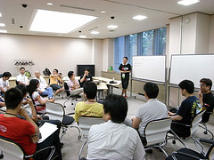

RegionalRubyKaigi レポート (特別編) RegionalRubyKaigiKaigi
書いた人: tanabe sunao、Rust/OGAWA(conceal_rs)、榊祐介
はじめに
 日本 Ruby 会議の会期中に Regional RubyKaigi (地域 Ruby 会議) についての意見交換をする会として Regional RubyKaigi 会議 が開催されました。札幌、仙台、とちぎ、東京、関西、広島、松江、九州すべての Regional RubyKaigi の関係者 (運営または登壇者) が集まり、Regional RubyKaigi の集まりとして不足のない顔ぶれでした。また、青森や名古屋のように、これから Regional RubyKaigi を開催したいと考えている地域の Rubyist も参加してくれました。
RegionalRubyKaigiKaigi について
- 開催日
- 2009/7/18 17:00〜18:30
- 開催場所
- 東京都千代田区学術総合センター
- 参加者
- 30 〜 40 名くらい
Regional RubyKaigi について
Regional RubyKaigi プロジェクトの背景や枠組みについては、角谷さんが gihyp.jp に寄稿した記事、「地域 Ruby 会議・アンド・ナウ」を参照してください。
RegionalRubyKaigi を振り返る
日本 Ruby 会議 2008 以降に開催された地方たち
まずは集まっている人の確認の意味もあり、開催された RegionalRubyKaigi が開催順に確認されました。
最初は東京 Ruby 会議 01 です。東京 Ruby 会議 01 は、Rubykaigi2008 を終え RubyKaigi の方向性を見失っていた角谷さんが実行委員長となり「RubyKaigi の楽しさを取り戻したかった」という思いのもと、「RubyKaigi は主に Ruby を作っている人たちの自慢大会なので、Ruby を使っている人たちの話をメインに聞いてみたい」というコンセプトで開催された Regional RubyKaigi でした。
次に札幌 Ruby 会議 01 です。札幌 Ruby 会議 01 は「Ruby 会議の楽しさ (作る楽しさ、参加する楽しさ) を札幌のみんなに。」という思いで開催されました。
関西 Ruby 会議 01 は関西オープンフォーラム 2008 (KOF2008) との共催として開催されました。
九州 Ruby 会議 01 は福岡県の協力が得られるということもあり、きっちりしたものができるようがんばったそうです。その結果、初回の Regional RubyKaigi でありながら日本 Ruby 会議 2006 の規模を上回る最大規模の Regional RubyKaigi が開催されました。ただ、次はこの規模での開催は考えていないとのことでした。
仙台 Ruby 会議 01 は地元が東北の人を集めて話をしてもらうという形で開催されました。そのコンセプトもあってか発表でも自分のことを話す場面が見られるなど Regional ならではの楽しみがあったようです。
松江 Ruby 会議 01 は地の利を活かし松江での Ruby メンテナの開発合宿にあわせて開催されました。地元の中小企業の人や行政の人も来場するなど松江開催らしい Regional RubyKaigi だったようです。
とちぎ Ruby 会議 01 は「いつもどおりの toRuby でした。」の言葉のとおり、元々しっかりコミュニティの基盤があることを活かし toRuby 拡大版として開催されました。ここまで「(漢字名) Ruby 会議」という命名規約でやってきていた Regional RubyKaigi の名前が前例を踏襲できなくなったのもこのとちぎ Ruby 会議からでした。
広島 Ruby 会議 01 は行政が絡んだ Regional RubyKaigi だったためか参加者の大半がスーツ着用という異色の Regional RubyKaigi でした。島根も所属する中国経済産業局が Ruby への関心が高いらしくその色合いの濃い開催となったようです。
今後開催したい地方の人たち
開催が終わったところの参加者の紹介が終わり、引き続き今後の開催を希望し会議へ参加してきた人たちの紹介へ移りました。
青森では地方自治体の協力の下、勉強会拡大版を開催したそうです。来年同じようなチャンスがあれば Regional RubyKaigi として開催したいという話がありました。
名古屋は「開催を希望しているが、地元での技術系イベントは少なく地域コミュニティもない。まずはその地域コミュニティをしっかりとやっていくのが先だと思っている。」と考えているそうです。
横浜からも参加がありました。勉強会がたくさん開催される東京に比べ、神奈川 (横浜) はあまりないそうです。「それでも東京へ行くのはいやだ。」ということで、Regional RubyKaigi の扱いにするかはわからないが人を集めてみたいと考えているそうです。
東京の地域.rb からの参加となった Tokyu.rb は Tokyu.rb として計画しているイベントを東京 Ruby 会議 02 として開催するかどうかの意見交換をするための参加でした。
今後の Regional RubyKaigi をどのように続けていくのか？
ここからは自由な議論の中で Regional RubyKaigi を続けていくために必要なこと、問題になりそうな様々なことがテーマとして挙がり、その場その場で意見交換がされていくという流れになりました。いくつかの話題を紹介します。
東京 Ruby 会議 02 の開催はどうするか？
「開催予定がなかった東京 Ruby 会議 02 として Tokyu.rb が企画している TokyuRubyKaigi (当時の仮称) を開催するのはどうか。」という話がありました。Regional RubyKaigi ではないものに xxxRubyKaigi という名称をつけてほしくないという意見が背景にあっての議論で、Regional RubyKaigi はどのような内容であるべきか、どのようなものではいけないのかについて意見が出ました。
いくつかの意見を紹介すると、
- 東京Ruby会議01のクオリティが高いと受けとめられてしまっているのは心外。
- 内容にクオリティを求めるがために継続できなくなるというのは困る。もっと気軽な開催が増えてほしい。
- Regional RubyKaigi として開催されるならるびまにレポートは出してほしい。レポートの形式はこれまでのものと違っていてもいい。違っているほうがおもしろい。
- 開催母体になるコミュニティが違えば、開催形式や内容もいろいろなものがあっていいのではないか。
というような意見が挙がっていました。
多様だけどばらばらではない。ゆるい連帯感をもつ。
今後の Regional RubyKaigi について議論をする中で Regional RubyKaigi の発起人でもある角谷さんから「多様であることは歓迎。けれど、ばらばらになっては勿体ない。何らかのかたちで Regional RubyKaigi としての繋がりを持たせられないか」という問題提起がありました。この話の背景にはアメリカの RegionalConf があります。年一回の RubyConf では足りないということで始まった RegionalConf は毎年各地でばらばらに開催され、現在は RubyCentral も把握しきれていない状態になっているようです。
この点についてもいろいろな意見が交わされましたが、具体的にどのような連帯を持つべきかということについては結論が出ませんでした。これは今後開催される Regional RubyKaigi の宿題となってくるのでしょう。
また、多様であることの一つの話題として「たとえば海外開催となる上海での開催は Regional RubyKaigi と認められるのか。」という質問があり、日本 Ruby の会会長の高橋さんが回答する場面がありました。Regional RubyKaigi をバックアップしている日本 Ruby の会としては「誰が来ようとどこでやろうと日本の Rubyist のためになれば OK」という回答になるそうです。
土台となるコミュニティがないところでの始め方
今後の開催を希望する組として参加の青森からは「強いコミュニティ基盤のない地方ではどのように始めていけばよいのか。」という質問がありました。札幌やとちぎのように地域コミュニティに存在感や求心力があれば、講演者も呼びやすくなるが、そうではなくこれからのところもあります。そういう違いの中でどのように Regional RubyKaigi を目指すのかという話題で盛り上がりました。
まずは自分たちがやっていることを発信してみるのはどうかという提案もあれば、大学や行政、他のカンファレンスに相乗りで力や予算を借りた事例の紹介もありました。一方で東京は開催母体となれるような地域.rb が幾つもあってうらやましいという意見も出るなど、どのように開催し続けていくのかは地方の事情の差を考えて消化していく必要があることも見えてきました。
Regional RubyKaigi と呼べるもの。呼べないもの。
会議の終わりには Regional RubyKaigi と呼べるものと呼べないものの条件についての確認がありました。回答はこのようなものでした。
Regional RubyKaigi と名乗るための前提としては、
- 開催予定について、事前に日本 Ruby の会が把握できるようにしてほしい。「いつの間にか開催していた」というような事態は避けてほしい。
- 参加方法についてオープンであること。参加方法が不透明な内輪の集まりは Reginal RubyKaigi とは呼べない。
- イベントの内容について、特に口出しするつもりはない。
開催するための手順については、redmine.ruby-lang.orgのWikiに載せているので、そちらも確認してほしいとのことです:
- Regional RubyKaigi のメーリングリストに参加する。
- いつ、どこで開催するのか。
- 連絡先としての窓口担当者 (実行委員長) が誰なのかをはっきりさせる。
- 開催費用を徴収する場合は別途会計担当者を立てる。
- るびまに開催レポートを寄稿してほしい。
おわりに
まとめとしてもう一度 Regional RubyKaigi で出た今後にむけてのキーワードを書いてみます。「多様性の中でどうするか」「継続していきたい」「地域とのつながり方」「地域間のつながり方」。
今年も新しく開催されるもの、そして 02 として開催されるもの、たくさんの Regional RubyKaigi が開催されます。詳細の告知などはこれからですが、執筆時点で開催が確定しているの Regional RubyKaigi は次の通りです:
- 2009/10/10: 名古屋 Ruby 会議 01
- 2009/10/24: とちぎ Ruby 会議 02
- 2009/11/06 - 07: 関西 Ruby 会議 02 (関西オープンフォーラム(KOF)との共催)
- 2009/12/05: 札幌 Ruby 会議 02
よかったらお近くのものから足を運んでみてください。みなさまのお越しをお待ちしております。各 Regional RubyKaigi についての最新情報は、RubyKaigi 日記でも随時お知らせしていく予定です。
著者について
tanabe sunao
blog.hacklife.net。Ruby 歴は約 4 年。好きなメソッドは、Expectations::Suite#expect 。
Rust/OGAWA(conceal_rs)
Ruby on Railsで300万人規模のサービスを開発・運用しているエンジニア。コミュニティ活動という飲み会が大好きなので、様々なコミュニティの勉強会に顔を出しています。今回は各地のRegional RubyKaigiを主催された方々や、これからやりたいという人達の話を聞けて、自分ももっと広がっていかないとなーと思いました。
榊祐介 (さかきゆうすけ)
アプリケーションプラス株式会社所属。「おいしいRuby」がテーマな Mitaka.rb 主催者。三鷹プログラマーズカフェ運営。10 年ほど WEB アプリケーションの開発に携わる。 Rails は 2006 年から使用している。